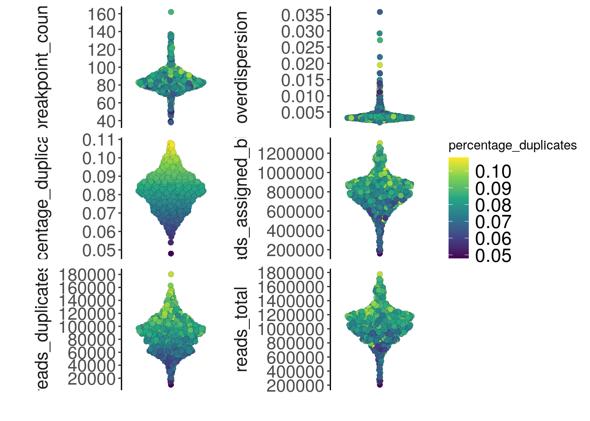
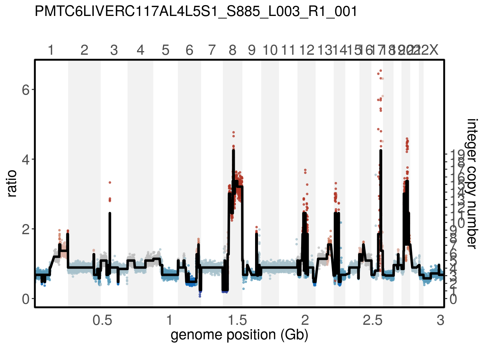
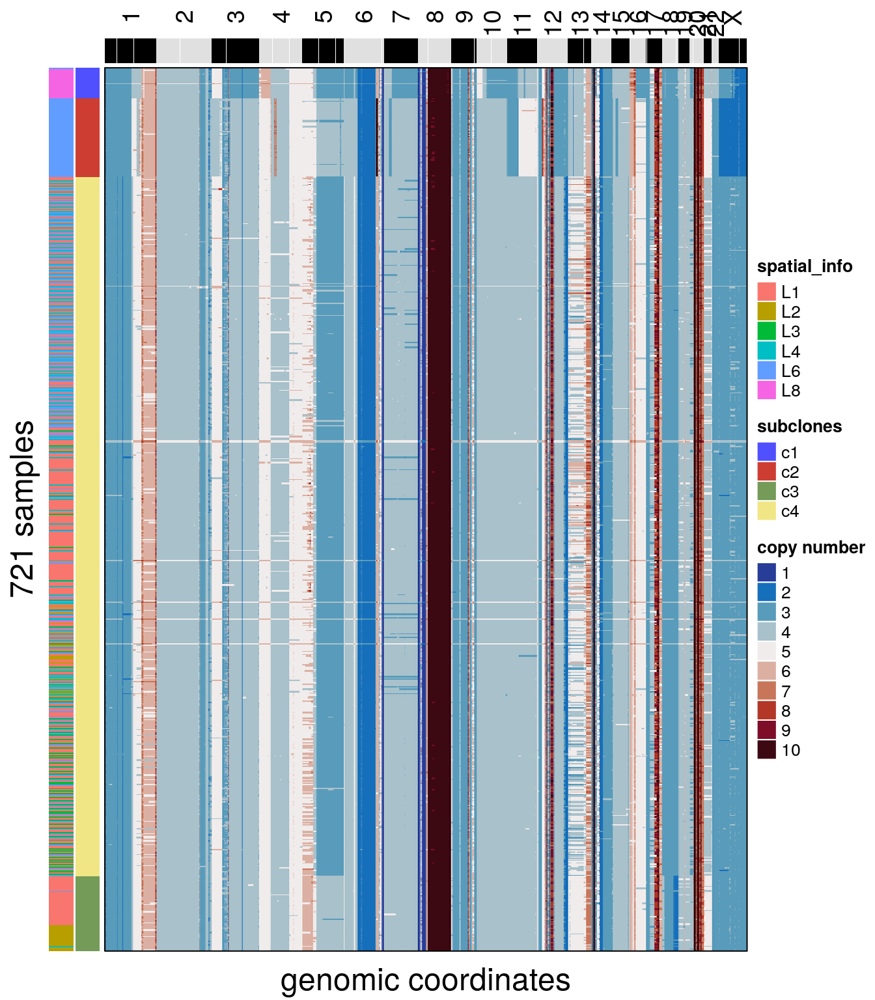
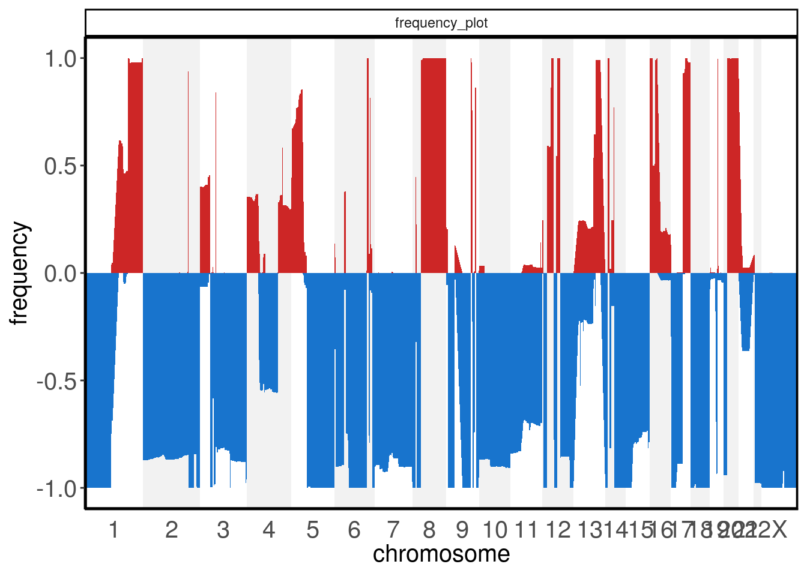
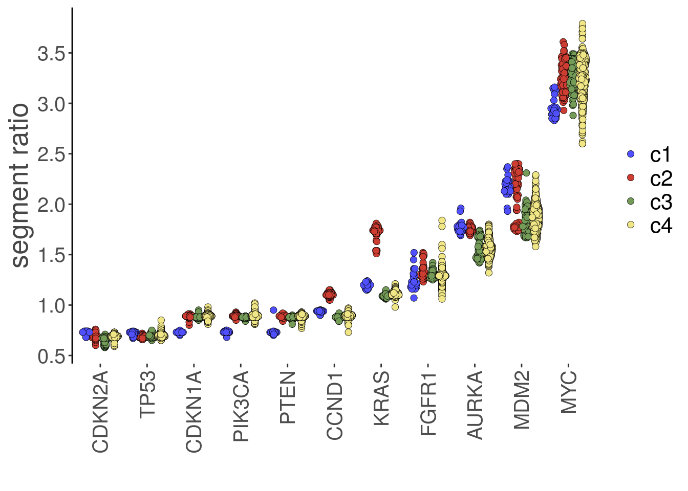
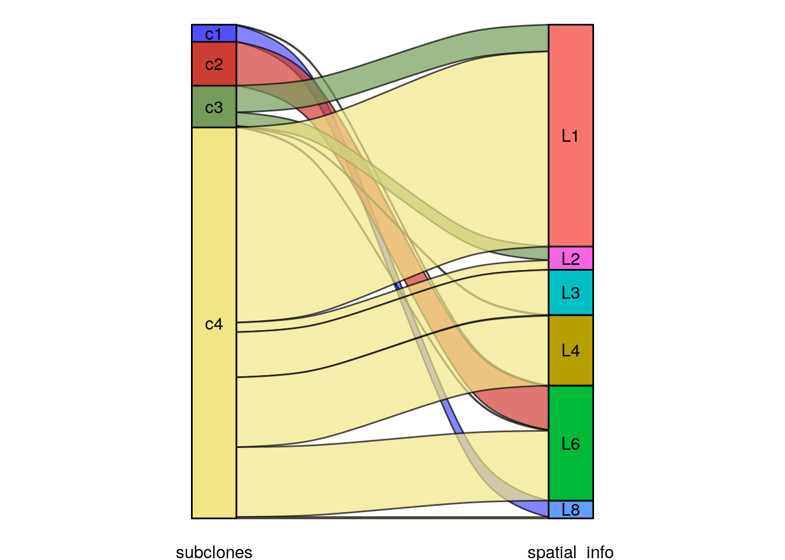

7 Analysis and Visualization module
The analysis and visualization module from CopyKit work in synergy to help you analyze your single cell copy number results.
7.1 plotMetrics()
The plotMetrics() function can plot any information store in colData(), which is passedto the metric argument. If a label argument is supplied, the points will be colored based on that information.
plotMetrics(tumor, metric = c("overdispersion",
"breakpoint_count",
"reads_total",
"reads_duplicates",
"reads_assigned_bins",
"percentage_duplicates"),
label = "percentage_duplicates")## Coloring by: percentage_duplicates
7.2 plotRatio()
Visualizing the seegmeentation to eensure it follows the ratios as expected is crucial to a copy number analysis. This helps to verify the accuracy of the segmentation an assess the quality of the data visually.
The plotRatio() function is a useful tool for this, offering two different modes. When the input is the CopyKit object, an interactive app will open, allowing you to choose which cell to visualize from the drop-down option menu.
plotRatio(tumor)
Ratio Plot App
Providing a sample name to the plotRatio() function with the argument sample_name, will display the plot only for the selected cell.
plotRatio(tumor, "PMTC6LiverC117AL4L5S1_S885_L003_R1_001")
7.3 runUmap()
The runUmap() function generates a UMAP embedding, which is stored in the reducedDim slot.
runUmap() is an important pre-processing step for the findClusters() feature.
tumor <- runUmap(tumor)## Using assay: logr## Embedding data with UMAP. Using seed 17## Access reduced dimensions slot with: reducedDim(scCNA, 'umap').## Done.You can pass additional arguments to control UMAP parameters using the '...' argument. The full list of additional arguments that can be passed on to uwot::umap with the ‘…’ argument can be found in the uwot manual and information on their influence on clustering can be seen in the UMAP webpage
7.4 Clustering
The findClusters() function performs clustering using the UMAP embedding generated by runUmap(). For detecting subclones, CopyKit uses
different clustering algorithms such as:
The hdbscan method is recommended and has been previously successfully applied in the work from Laks et al. and Minussi et al..
7.4.1 findSugestedK()
The findSuggestedK() is a helper function that provides guidance to choose the k parameter for clustering algorithms. The function
findSuggestedK bootstraps clustering over a range of k values, and returns the value that maximizes the jaccard similarity, with median as the default metric (argument metric).
While findSuggestedK does not guarantee optimal clustering. It provides a guide to select k values.
tumor <- findSuggestedK(tumor)## Calculating jaccard similarity for k range: 10 11 12 13 14 15 16 17 18 19 20 21 22 23 24 25 26 27 28## ## Suggested k = 23 with median jaccard similarity of: 1The plotSuggestedK() function can be used to inspect the results of findSuggestedK(). It can plot a boxplot, heatmap (tile), or scatterplot
plotSuggestedK(tumor)
If the argument geom is set to tile, plotSuggestedK() plots a heatmap where each row is a detected subclone, each column is a k assessed during the grid search and the color represents the jaccard similarity for a given clone.
The suggested value can be accessed from the metadata:
S4Vectors::metadata(tumor)$suggestedK## [1] 237.4.2 findClusters()
To run findClusters(), pass the CopyKit object as its input. If findSuggestedK() was run beforehand, findClusters() will automatically use the stored value from findSuggestedK() as the argument for k_subclones, unless otherwise specified.
tumor <- findClusters(tumor)## Using suggested k_subclones = 23## Finding clusters, using method: hdbscan## Found 4 subclones.## Done.If hdbscan is used for clustering, singletons outliers may be idetified and added to subgroup c0. Copykit will notify you of any cells classified as c0 after running findClusters(). To remove outliers, subset the CopyKit object with:
tumor <- tumor[,colData(tumor)$subclones != 'c0']
7.5 scquantum & calcInteger()
The scquantum package is integrated into CopyKit to infer absolute copy numbers. It can be used either within CopyKit or as a standalone package available on GitHub. Other methods for inferring absolute copy numbers are metadata and fixed. After running calcInteger(), CopyKit scales the segment ratios to integer values, which are stored in the integer slot and can be accessed using the assay() function.
To infer absolute ploidy values using scquantum, specify scquantum as the method argument in calcInteger(). The estimated computational ploidy is stored in colData() along with confidence_ratio, which compares the obtained score with the theoretical estimate, and ploidy_score, a transformation of confidence_ratio with values closer to 0 indicating better ploidy inference calls.
tumor <- calcInteger(tumor, method = 'scquantum', assay = 'smoothed_bincounts')The resulting ploidy_score scores can be used for further quality control of the single cell dataset.
tumor <- tumor[,colData(tumor)$ploidy_score < 0.2]Setting the method argument to ‘fixed’ scales all cells to a fixed value of ploidy (generally determined by flow cytometry), which is passed to CopyKit using the ploidy_value argument:
tumor <- calcInteger(tumor, method = 'fixed', ploidy_value = 4.3)If the integer assay exists, plotRatio() will plot it as a secondary axis.
plotRatio(tumor, "PMTC6LiverC117AL4L5S1_S885_L003_R1_001")
7.6 plotHeatmap()
Copy number profiles can be visualized with a heatmap using the plotHeatmap() function. The elements of colData() can be annotated on the heatmap with the argument label. To order subclones, a consensus phylogeny can be calculated with calcConsensus() and runConsensusPhylo(), if the argument order_cells is not provided, the order of the cells in the heatmap will follow the order of the cells within the CopyKit object. In the plotHeatmap() function, gene annotations can be added with the genes argument.
To visualize copy number profiles with a heatmap we can use plotHeatmap().
The heatmap can be annotated with elements of colData.
To order subclones, one option is to calculate a consensus phylogeny, explained in later sections:
tumor <- calcConsensus(tumor)
tumor <- runConsensusPhylo(tumor)
plotHeatmap(
tumor,
label = 'subclones',
genes = c("TP53", "BRAF", "MYC"),
order_cells = 'consensus_tree'
)## Ordering cells by:consensus_tree## Plotting Heatmap.Integer copy number heatmaps can be plotted by passing assay = ‘integer’, with the integer matrix in the ‘integer’ slot. New information can be added to colData() and used in plotting functions. For example, spatial information encoded in the sample name can be extracted and added as a column to the metadata, and used to annotate the heatmap.
# adding spatial information
colData(tumor)$spatial_info <- stringr::str_extract(colData(tumor)$sample, "L[0-9]")
# plotting the integer heatmap with the spatial and subclonal information
plotHeatmap(tumor, assay = 'integer', label = c("spatial_info", "subclones"), order_cells = 'consensus_tree')## Ordering cells by:consensus_tree## Plotting Heatmap.
The spatial information can now also be used to color the elements of the UMAP:
plotUmap(tumor, label = 'spatial_info')## Plotting Umap.## Coloring by: spatial_info.
7.7 runPhylo() & plotPhylo()
The runPhylo() function can be used to perform phylogenetic analysis of cells’ copy number profiles. The available methods are Neighbor Joining and Balanced Minimum evolution.The resulting tree is stored in the phylo slot within the CopyKit object.
The plotPhylo() function can be used to visualize the trees generated by runPhylo(). The leaves of the tree can be colored based on any element of the colData by using the argument label.
tumor <- runPhylo(tumor, metric = 'manhattan')## Using ratio data...## Calculating distance matrix## Creating neighbor-joining tree.## Access slot with copykit::phylo(scCNA).## Done.plotPhylo(tumor, label = 'subclones')## Warning: The tree contained negative edge lengths. If you want to ignore the edges, you can set
## 'options(ignore.negative.edge=TRUE)', then re-run ggtree.7.8 plotFreq()
The plotFreq() function can be used to visualize genomic gains or losses across the genome. This function calculates the frequency of gain or losses in each region of the genome based on a threshold applied to all samples. The low_threshold argument (below which values are counted as genomic losses) and high_threshold argument (above which values are counted as genomic gains) control the thresholds. It is recommended to set the thresholds based on the ploidy of the sample. To use the integer assay instead of the default segment_ratios assay, pass the assay argument. The visual representation of the frequencies can be shown as either an area or a line geom
plotFreq(tumor)
Elements of colData() can be used to split the plot across different groups.
plotFreq(tumor,
group = 'subclones')
7.9 calcConsensus()
Consensus sequences can help visualize the different segments across subclones. To calculate consensus matrices we can use calcConsensus().
tumor <- calcConsensus(tumor)plotHeatmap() can plot a consensus heatmap:
plotHeatmap(tumor, consensus = TRUE, label = 'subclones')## order_cells argument is NULL. Samples are ordered according to
## colnames(CopyKit)## Plotting Heatmap.
plotHeatmap() can annotate the consensus heatmap with information from the metadata as long as label is the same as the information used to build the consensus matrix:
plotHeatmap(tumor, consensus = TRUE, label = 'subclones', group = 'spatial_info')## order_cells argument is NULL. Samples are ordered according to
## colnames(CopyKit)## Plotting Heatmap.
By default calcConsensus() uses the subclones information to calculate a consensus for each subclone.
Any element of the colData() can be used to calculate the consensus.
Note: Consensus matrices can be calculated from the integer assay. Importantly, the integer matrix must be in the assay(tumor, 'integer') slot. Check calcInteger() for more info.
tumor <- calcConsensus(tumor, consensus_by = 'subclones', assay = 'integer')7.10 plotConsensusLine()
To compare the differences among subclones, plotConsensusLine() opens an interactive app where the consensus sequences are plotted as lines.
plotConsensusLine(tumor)
Plot Consensus Line
7.11 plotGeneCopy()
To check copy number states across of genes we can use plotGeneCopy(). Two different geoms: “swarm” (default) or “violin” can be applied.
As with other plotting functions, points can be colored with the argument ‘label’.
plotGeneCopy(tumor, genes = c("CDKN2A",
"FGFR1",
"TP53",
"PTEN",
"MYC",
"CDKN1A",
"MDM2",
"AURKA",
"PIK3CA",
"CCND1",
"KRAS"),
label = 'spatial_info')## Coloring by: spatial_info
A positional dodge can be added to facilitate the visualization across groups:
plotGeneCopy(tumor,
genes = c("CDKN2A",
"FGFR1",
"TP53",
"PTEN",
"MYC",
"CDKN1A",
"MDM2",
"AURKA",
"PIK3CA",
"CCND1",
"KRAS"),
label = 'subclones',
dodge.width = 0.8)## Coloring by: subclones
A barplot geom is also provided to visualize the integer data as a frequency barplot for each gene:
plotGeneCopy(tumor, genes = c("CDKN2A",
"FGFR1",
"TP53",
"PTEN",
"MYC",
"CDKN1A",
"MDM2",
"AURKA",
"PIK3CA",
"CCND1",
"KRAS"),
geom = 'barplot',
assay = 'integer')
7.12 plotAlluvial()
To visualize frequencies across elements of the metadata we can use plotAlluvial()
plotAlluvial(tumor, label = c("subclones", "spatial_info"))
7.13 runPca()
Principal Component Analysis can be run with runPca()
tumor <- runPca(tumor)## Using assay: logr## Embedding data with PCA.## Access reduced dimensions slot with: SingleCellExperiment::reducedDim(scCNA, 'pca').## Done.The results are stored in the reducedDim(tumor, 'PCA') slot.
Principal Components can be used as an alternative pre-processing step to the findClusters() function by changing findClusters() embedding argument to ‘PCA’. The number of principal components to be used for clustering can also be set within `findClusters() with the argument ncomponents. At this time better results are achieved by using the default UMAP embedding and it is the recommend pre-processing step. However PCA remains as a viable alternative